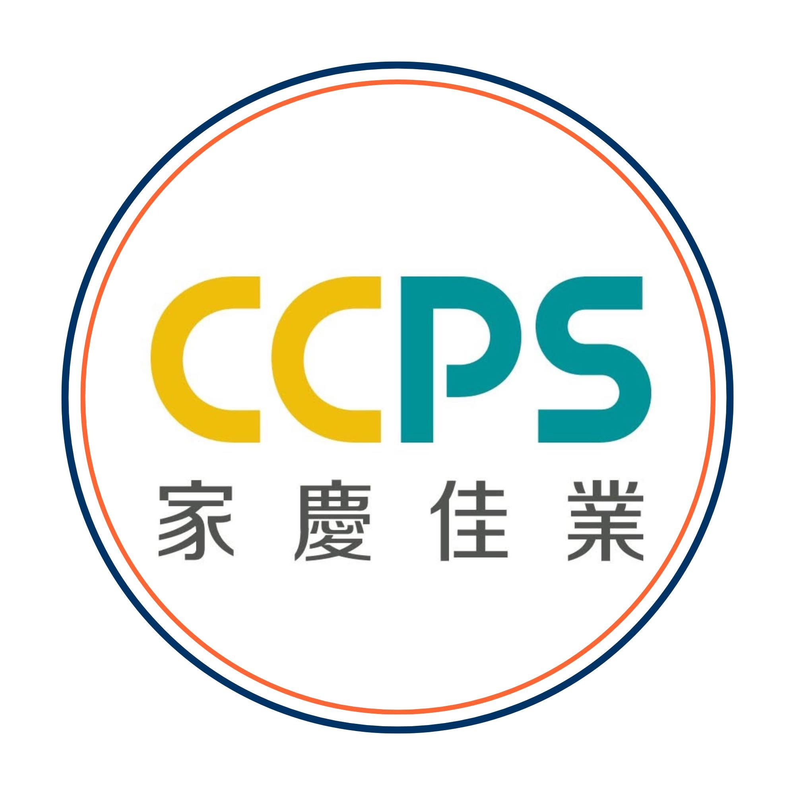

CCPS FB 信任文章
輸出
尚未生成。輸入主題後即可直接產生文章。
多平台改寫
尚未改寫。
圖片與影片腳本生成器
先生成文章，再選擇成品。V1 產生可複製的提示詞、腳本與分鏡，不會呼叫付費圖片或影片 API。
尚未生成製作稿。

海外置產品牌內容與成效學習｜V1
獨立公司系統入口；登入與權限由各正式網站管理。
獨立廣告管理入口；本系統不會建立、修改或發布廣告。
選擇工具或平台後以新分頁開啟；本系統不會傳送文章、帳號或個人資料。
先生成文章，再選擇成品。V1 產生可複製的提示詞、腳本與分鏡，不會呼叫付費圖片或影片 API。
整合 CCPS 官網、《馬來西亞置產寶典 V2.0》及通過公開邊界檢查的本機研究／視覺素材。法律、稅務、政策、匯率、價格與市場數據須回權威來源查證。
每個可配置欄位均提供 8 種符合 CCPS 家慶佳業定位的選項。
選擇最接近本次內容任務的寫作方式，之後可隨時切換。